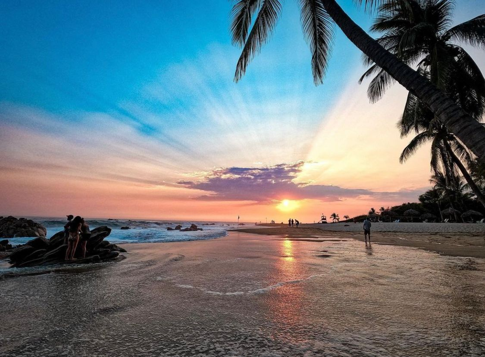
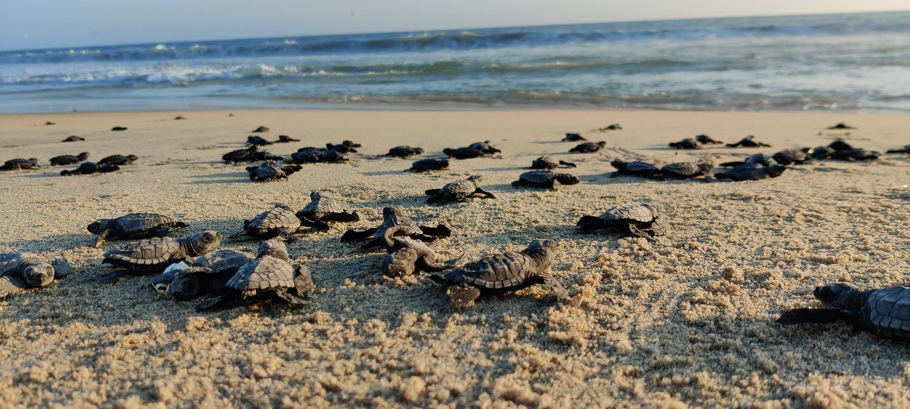
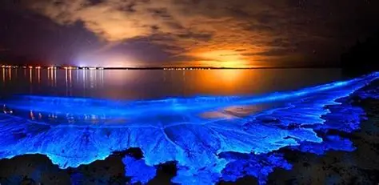
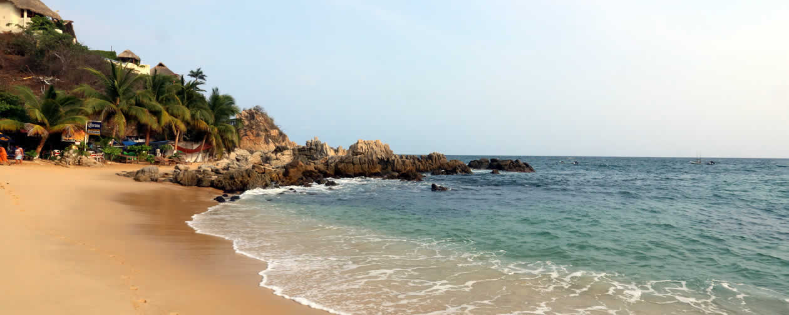
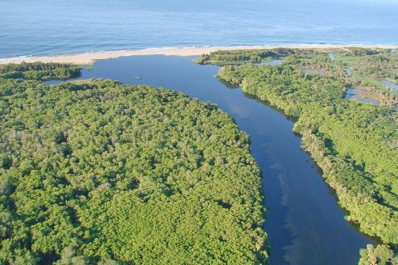
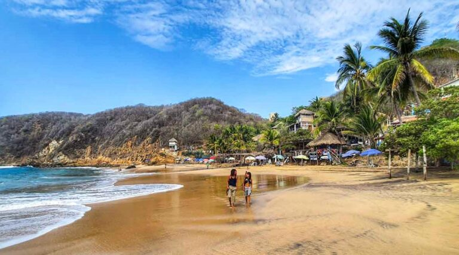

El paraíso surfer y bohemio de Oaxaca
Puerto Escondido es el destino más auténtico y emocionante del Pacífico Oaxaqueño. Famoso mundialmente por la Playa Zicatela — una de las olas más grandes del mundo —, este pueblo tiene alma bohemia: mezcla de surfistas internacionales, cultura zapoteca, gastronomía oaxaqueña excepcional y fenómenos naturales únicos como la bioluminiscencia nocturna y el santuario de tortugas.

La "tubería mexicana" — una de las olas más grandes y poderosas del mundo.

En temporada (jul-dic), miles de tortugas llegan a desovar — experiencia mágica.

Bioluminiscencia nocturna en las lagunas — el agua brilla como estrellas

Playa tranquila ideal para familias, con aguas más calmas que Zicatela.

Tour en lancha entre manglares con aves exóticas y kayak al atardecer.

Ciudad patrimonio con mezcal artesanal, tlayudas y Monte Albán.